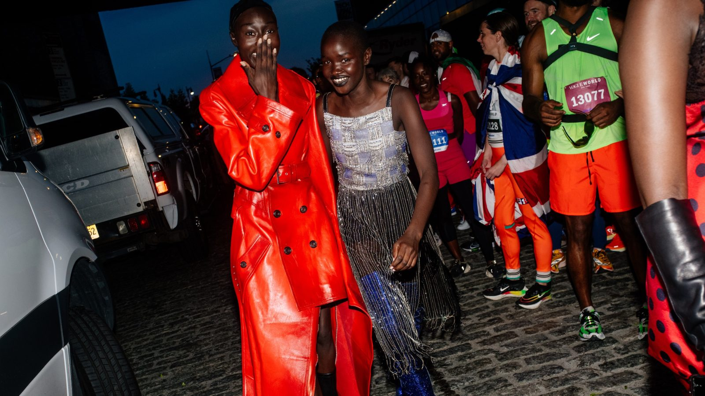
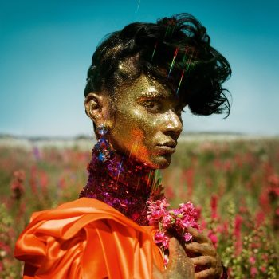
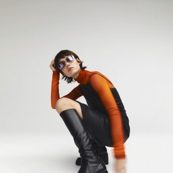

Hoofdartikel
5 trends die je nu moet weten – zoals gezien op de runway van ‘Vogue World: New York’
Marjolijn de Brand
Top artikelen
- 
- 
-

Vouge
oktober 2022

Beauty
Zilver is het nieuwe zwart in de schoenentrends dit najaar – en wij zijn fan
Laura Severi
23 September 2022